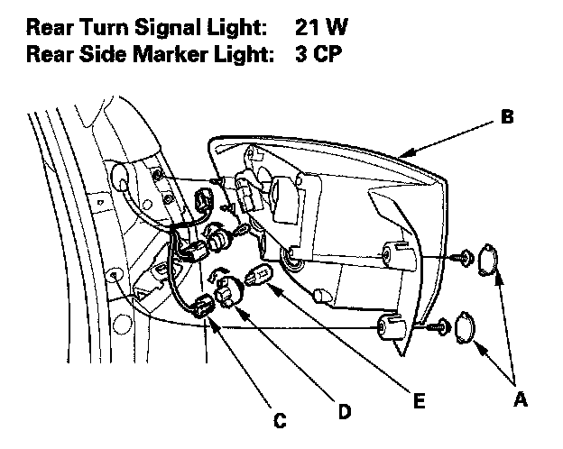
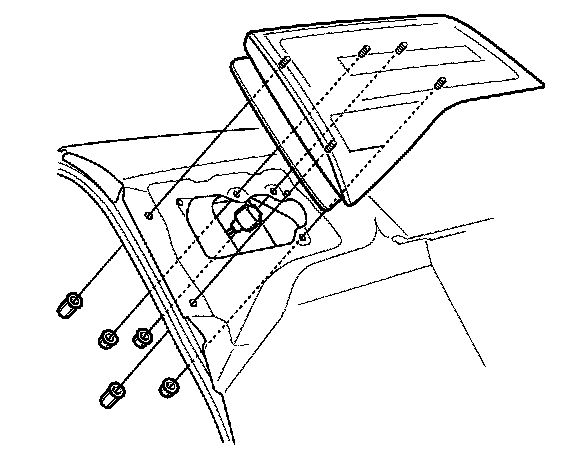
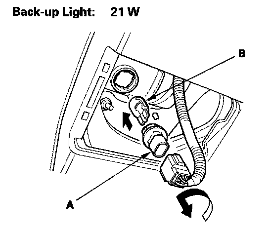

Taillight Replacement
Taillight ReplacementTaillight

1. Remove the covers (A) and two bolts from the taillight (B).
2. Carefully pull out the taillight.
3. Disconnect the connectors (C) from the taillight.
4. Turn the bulb sockets (D) 45° counterclockwise to remove the bulbs (E).
5. Install the light in the reverse order of removal.
Inner Taillight
1. Remove the tailgate lid panel.

2. Disconnect the 2P connector (A) from the inner taillight (B).
3. Remove the five nuts, then remove the inner taillight.

4. Turn the bulb socket (A) 45° counterclockwise to remove the bulb (B).
5. Install the light in the reverse order of removal.